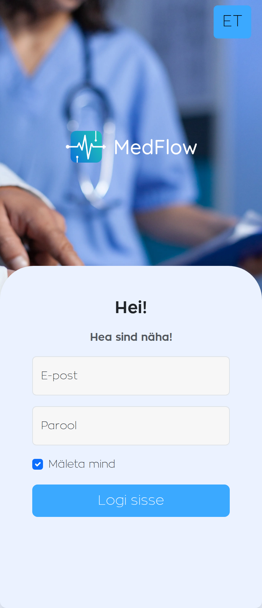

Current public mobile surface
The live app is real, but the first mobile moment is still authentication rather than operational context.
09:41
5G

Observed friction
Public surface defaults to a login wall with no schedule context, no urgent-task framing, and no preview of the flow MedFlow is selling.
What is missing
Coverage gaps, replacement options, notifications, and staff actions are invisible until after authentication.